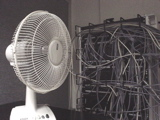
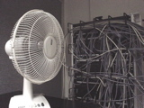

計算機を始めとする精密機器は、基本的に熱で誤動作・障害等が発生するので、空調には気を配らなくてはいけません。僕らの実験室でも、ネットワーク機器が熱を持ちすぎないように常に気を配っています。
扇風機で。
計算機を始めとする精密機器は、基本的に熱で誤動作・障害等が発生するので、空調には気を配らなくてはいけません。僕らの実験室でも、ネットワーク機器が熱を持ちすぎないように常に気を配っています。
扇風機で。
楽しみしていた「Team America」が公開になったので速攻で見てきました。「サウス・パーク」のトレイとマットによる人形劇映画。ピアノ線を消す気配すらないよ。
終始、劇場中が大爆笑。僕も笑い死ぬかと思いました。いちいちバカで下世話でやりすぎ(エロ、グロ、ゲロ)。チーム・アメリカが出動するシーンで、やたら勇ましい感じのテーマソングが「America, Fuck Yeah!!」と流れるのも最高ですが、悲しいシーンで悲しくアレンジされたテーマソングが「America, fuck yeah...」と流れるのも最高です。「サウス・パーク劇場版」でもそうでしたが、彼らの劇中歌の使い方、クオリティは本当に素晴らしいですね。
この映画はR指定なんですけど、親が承知してれば子供も連れて入れるので、劇場では小さいお子様達もちらほら見かけました。両親は、あとで子供から人形が裸同士で腰を振ってるシーンの説明を求められやしないかと心配です(余計なお世話)。日本公開はいつなんだろう。
かけうどんの後でビーフジャーキーを食べる事により、胃の中で「肉うどん」をつくる技を開発した。